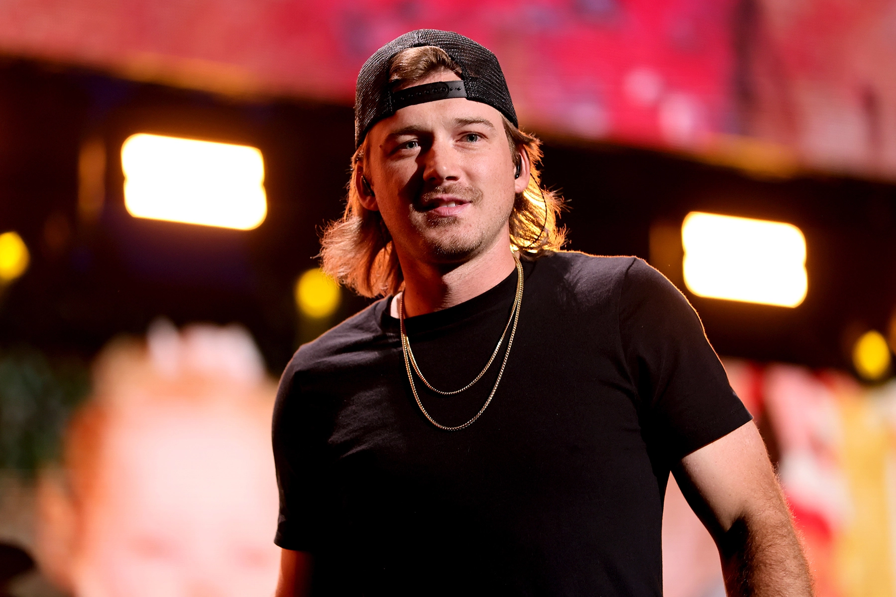
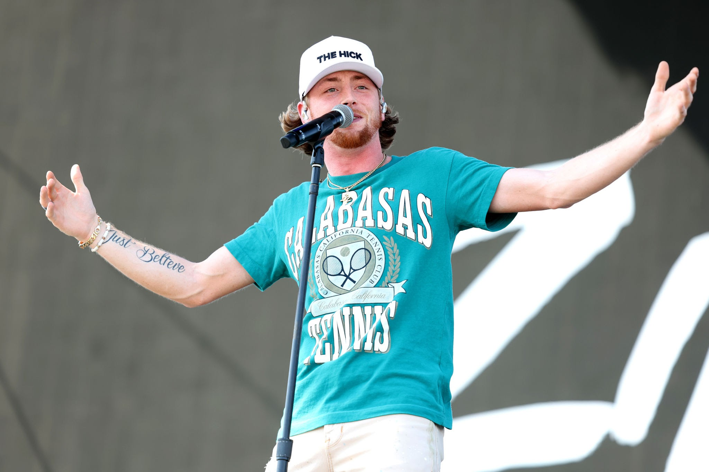

Favorite Artsits
My top 5 favorite artists probably include: The Kid Laroi, Kane Brown, Morgan Wallen, The Weeknd, and Bailey Zimmerman.
The Kid Laroi
- The Kid Laroi is a 20 year old from Waterloo Australia who in best known for his rap and pop music.
- His most famous song is Stay ft. Justin Bieber.
- His latest ALbum dropped on November 10th, 2023 called 'The First Time'.
Kane Brown
- Kane Brown is a 30 year old from Chattanooga, TN who in best known for his country music.
- Thank God is his most famous song.
- His latest ALbum dropped on September 9th, 2022 called 'Different Man'.
Morgan Wallen
- Morgan Wallen is a 30 year old from Sneedville, TN who in best known for his country music.
- His most famous song is probably Last Night.
- His latest ALbum dropped on March 3, 2023 called 'One Thing at a Time'.
The Weeknd

- The Weeknd is a 33 year old from Toronto, Canada who in best known for his pop music.
- Blinding Lights is his most famous song.
- His latest ALbum dropped on January 7, 2022 called 'Dawn FM'.
Bailey Zimmerman
- Bailey Zimmerman is a 23 year old from Louisville, IL who in best known for his country music.
- His most famous song is probably Fall In Love.
- His latest ALbum dropped on March 17, 2023 called 'Religiously'.